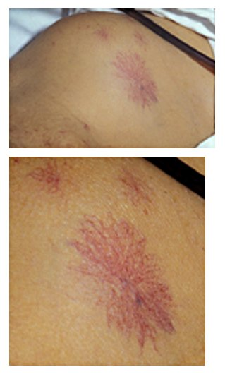

המערך לכירורגיה כלליתהמרכז הרפואי קפלן
Scrub In · סטודנטים שנה ד׳ · שבוע 1
עקרונות קבלת חולים בכירורגיה
מהשיחה הראשונה ועד בוקר הניתוח: אבחנה, דחיפות, מעבר לפי מערכות, תרופות והסכמה מדעת
מבוסס עלSabiston Textbook of Surgery · מהדורה 22
פרק 19
1מטרות הלמידה
בסוף המפגש תדעו
- לבנות קבלה כירורגית ממוקדת: לאשר או לשלול את האבחנה ולהזמין רק בדיקות שישנו את הטיפול
- לסווג ניתוח לפי המטרה שלו ולפי הדחיפות
- לעבור על המטופל לפי מערכות ולזהות מה מחייב הערכה נוספת לפני ניתוח
- לתכנן מה עושים עם התרופות לפני ניתוח: נוגדי קרישה, נוגדי טסיות, סוכרת וסטרואידים
- להכין מטופל מבוגר לניתוח: קוגניציה, דליריום, תפקוד ושבריריות
- להכיר את מרכיבי ההסכמה מדעת ואת ההזמנות לבוקר הניתוח
קריאה: Sabiston 22 · פרק 19 (עמ׳ 2–30)Scrub In · קפלן
2המפגש הראשון
קודם כול: מה האבחנה?
- האנמנזה והבדיקה נועדו קודם כול לאשר או לשלול את האבחנה החשודה
- עוברים על כל המעבדה וההדמיה שכבר נעשו. המטרה: לשחזר את הסיפור הקליני שקדם לפנייה
- בירור נוסף רק כשבאבחנה המבדלת נשארו אפשרויות שמחייבות טיפול שונה
- התער של אוקאם: לא מזמינים בדיקה שהתשובה שלה כמעט ידועה מראש או שלא תשנה את הטיפול
- שאלו גם על המשפחה, העבודה והקהילה. הקשר הזה בונה אמון
מטרת הניתוח: מניעהלהקדים מחלה. למשל כריתה מונעת בתסמונת סרטן תורשתית, אנדארטרקטומיה בהיצרות א-תסמינית של הקרוטיס
מטרת הניתוח: שליטה במחלהמחלה פעילה. למשל כריתת גידול, כריתת כיס מרה בדלקת חריפה, שחרור הידבקויות בחסימת מעי
מטרת הניתוח: הקלה (פליאציה)איכות חיים ולא ריפוי. למשל עקיפה בחסימה ממאירה של הקיבה
למה זה חשובבלי הסבר ברור של מטרת הניתוח אין הסכמה מדעת אמיתית
Sabiston 22 · פרק 19 עמ׳ 2–3המפגש הראשון
3דחיפות
מתוכנן, דחוף או חירום
מתוכנן (elective)ההערכה נעשתה בביקור נפרד ואז נקבע מועד. מאושפז או מטופל שהגיע מהמיון לא נחשב "מתוכנן"
דחוף (urgent)באמצע. לפי סיווג TACS המעודכן (2023): הזמן האידיאלי לניתוח נע בין מיידי לעד 4 ימים מהאבחנה
חירום (emergent)תהליך חריף שעלול להידרדר מהר. כל עיכוב מיותר מסכן את התוצאה
- קובעים דחיפות בהתחלה: היא קובעת אילו בדיקות, אילו ייעוצים וכמה זמן יש לאופטימיזציה
- בסיווג ASA מוסיפים את האות E לניתוח חירום: עיכוב בטיפול יגדיל משמעותית את הסכנה לחיים או לאיבר
- ניתוח חירום ממשיך לחדר הניתוח. גורמי הסיכון של המטופל קובעים רק את הניטור והטיפול סביב הניתוח
Sabiston 22 · פרק 19 עמ׳ 3, 9דחיפות
4מבנה הקבלה
מעבר לפי מערכות
לבמחלה כלילית, אי ספיקת לב, מסתמים, סטנטים. כושר תפקודי במט״ים
ריאותעישון, COPD, דום נשימה בשינה, זיהום נשימתי בחודש האחרון
כליותאי ספיקה כרונית, דיאליזה, אשלגן
כבדסימני שחמת: צהבת, מיימת, טחול מוגדל, כוכבי עכביש
דםהיסטוריית דימום, אנמיה, נוגדי קרישה וטסיות
אנדוקריניסוכרת, בלוטת התריס, סטרואידים, גידולים מפרישים
תזונהירידה במשקל, BMI, אלבומין
העיקרוןכל בדיקה לפני ניתוח צריכה סיכוי סביר לשנות משהו: לדחות ניתוח, לשפר מצב רפואי, לשנות ניטור או להפנות למרכז מתמחה
אין "אישור" מקרדיולוגהייעוץ לא נותן אישור. הוא נותן מידע על הסיכון ועל הדרכים להתמודד איתו
במחלקה השבועקבלו מטופל אחד לניתוח מתוכנן: אנמנזה לפי המערכות כאן ורשימת תרופות מלאה כולל צמחי מרפא. לכל תרופה: מה עושים איתה לפני הניתוח. הציגו לבכיר/ה
Sabiston 22 · פרק 19 עמ׳ 9, 11–16, 20–22מבנה הקבלה
5לב, ריאות ודרכי אוויר · אינטראקטיבי
מי צריך בירור נוסף?

👆 לחצו על איבר בציור כדי לקרוא מה בודקים לפני ניתוח
לב
- בלי תסמינים ומגיע ל-4 מט״ים (קומה במדרגות): ממשיכים לניתוח
- ניתוח בסיכון נמוך: אין צורך בבירור, גם כשהכושר נמוך
- אק״ג: לפני ניתוח שאינו בסיכון נמוך, במחלה כלילית, הפרעת קצב, מחלת עורקים היקפית או מחלה מוחית-וסקולרית
- אקו: קוצר נשימה לא מוסבר או אי ספיקת לב שמחמירה
- אחרי צנתור: ניתוח מתוכנן לא לפני 14 יום מבלון, 30 יום מסטנט מתכתי. מסטנט מצופה תרופה: רצוי 6 חודשים
ריאות
- סיבוכים ריאתיים: כ-6% אחרי ניתוחי בטן גדולים. ככל שהחתך קרוב לסרעפת, הסיכון עולה
- גורמי סיכון: גיל מעל 50, ASA 2 ומעלה, תלות תפקודית, אלבומין מתחת ל-3.5, COPD ואי ספיקת לב
- הפסקת עישון לפחות 4 שבועות לפני מורידה סיבוכים
- ספירומטריה וצילום חזה לא כשגרה. רוויה בדופק לכולם
- קורונה ב-4 השבועות האחרונים מעלה סיכון. אחרי 8 שבועות הסיכון חוזר לרגיל
בלוטת התריס
- בדיקת TSH ותפקודי תריס מזהים את הבעיה
- יתר פעילות: דוחים ניתוח מתוכנן עד לאיזון
- תת-פעילות עם תסמינים (עייפות, עלייה במשקל): דוחים. בלי תסמינים: אפשר להתחיל טיפול בכל שלב
דרכי אוויר ודום נשימה בשינה
- STOP-BANG: נחירות, עייפות, הפסקות נשימה, לחץ דם, BMI מעל 35, גיל מעל 50, היקף צוואר מעל 40 ס״מ, גבר
- 5 ומעלה: סיכון גבוה. לפני ניתוח מתוכנן: בדיקת שינה והתאמת CPAP
- ניתוח דחוף: מטפלים בדום הנשימה אחרי הניתוח
Sabiston 22 · פרק 19 עמ׳ 9, 11–13, 20–21איור: Sobotta, 1906, איור 451 (נחלת הכלל)
6כליות ודם
שתי מערכות שמשנות את התוכנית
כליות
- אשלגן תקין הוא תנאי לניתוח מתוכנן או דחוף באי ספיקת כליות. היפרקלמיה יכולה להרוג על שולחן הניתוחים
- דיאליזה ביום שלפני הניתוח או ביום הניתוח, קרוב ל"משקל יבש"
- אי ספיקה דרגה 3–5 או ניתוח בסיכון גבוה: אק״ג, ספירה, כימיה ושתן
- להימנע מ-NSAIDs, אמינוגליקוזידים וחומר ניגוד כשיש תפקוד כלייתי שארי
- דימום מטסיות אורמיות: דסמופרסין
דם
- לא שולחים תפקודי קרישה כשגרה. שואלים: דימומי אף, דימום וסתי מרובה, דימום למפרקים, דימום בניתוחים ובפעולות קודמות
- בבדיקה: דימום מהחניכיים ונקודות דימום בעור (טסיות), שטפי דם עמוקים ודימום למפרק (גורמי קרישה)
- חשד: ספירה, PT/INR, aPTT, קריאטינין ותפקודי כבד. הפניה להמטולוג
- עירוי דם במטופל יציב: כשההמוגלובין 7 או פחות (8 במחלת לב)
Sabiston 22 · פרק 19 עמ׳ 13–16כליות ודם
7כבד · בדיקה גופנית
לחפש שחמת לפני שהיא מפתיעה בחדר הניתוח
- בשאלות: הזרקת סמים, אלכוהול, קעקועים, השמנה ממושכת, מחלת כבד במשפחה. גרד וצהבת
- בבדיקה: צהבת בלובן העין, כוכבי עכביש, הרחבת ורידים סביב הטבור, טחול מוגדל, מיימת (גל נוזל), גינקומסטיה
- בלי חשד: לא בודקים תפקודי כבד כשגרה
- דלקת כבד חריפה או אלכוהולית: לא מנתחים ניתוח מתוכנן
- שחמת: תמותה בניתוחי בטן כ-10%, 20%, 60% ב-Child A, B, C. INR מוארך לא משקף סיכון דימום
- מיימת: לטפל לפני הניתוח (משתנים או ניקוז)


Sabiston 22 · פרק 19 עמ׳ 14–15כבד
8תרופות · קרישה
נוגדי קרישה ונוגדי טסיות
וורפריןמפסיקים 5 ימים לפני. INR מעל 1.5 ביום שלפני: ויטמין K או פלזמה
דביגטרן48 שעות לפני ניתוח גדול או בתפקוד כליות ירוד. נוגדן ייעודי לביטול: idarucizumab
מעכבי Xaריברוקסבן, אפיקסבן: 48 שעות לפני ניתוח בסיכון גבוה לדימום, 24 שעות בסיכון נמוך. חוזרים 1–2 ימים אחרי
גישור בהפריןרק בסיכון גבוה מאוד לקריש: שבץ טרי, תסחיף עורקי חריף, מסתם מכני. בפרפור פרוזדורים, לפי BRIDGE, בלי גישור אין יותר תסחיפים ויש פחות דימום. הפרין רגיל: עוצרים 4–6 שעות לפני, הפרין במשקל מולקולרי נמוך: 24 שעות
אספירין לבדבטוח להמשיך ברוב הניתוחים. לא מתחילים אספירין לפני ניתוח כדי להגן על הלב (POISE-2: בלי תועלת, יותר דימום)
טיפול כפול אחרי סטנטלא ניתוח מתוכנן שמחייב הפסקה ב-30 הימים אחרי סטנט מתכתי וב-6 החודשים אחרי סטנט מצופה. אם חייבים להפסיק את מעכב P2Y12: ממשיכים אספירין וחוזרים מהר. מחליטים יחד עם הקרדיולוג
Sabiston 22 · פרק 19 עמ׳ 11, 17–20נוגדי קרישה
9תרופות · אנדוקריני ועוד
סוכרת, סטרואידים וכל השאר
סוכרת
- לפני: המוגלובין A1c, אק״ג ואלקטרוליטים
- אינסולין ארוך טווח: כרגיל. ביניים (NPH): חצי מינון בבוקר הניתוח. קצר טווח: לא בבוקר הניתוח
- תערובות מוכנות: מינוס 20% בערב ומינוס 50% בבוקר. משאבה: קצב בסיסי בלבד
- מטפורמין וסולפונילאוריאה: לא ביום הניתוח. מעכבי DPP-4: כן
- מעכבי SGLT2: עוצרים 3–4 ימים לפני (חמצת קטוטית עם סוכר תקין)
- אגוניסטים ל-GLP-1: עוצרים שבוע לפני (לפי הספר. ראו "מה חדש")
סטרואידים ותרופות נוספות
- פרדניזון 5 מ״ג ביום או פחות: ממשיכים כרגיל
- מינון גבוה יותר 3 שבועות ומעלה: קורטיזול בוקר. מתחת ל-5 צריך תחליף, מעל 10 ממשיכים כרגיל. ביניהם: מבחן גירוי
- בלוטת התריס: יתר פעילות או תת-פעילות עם תסמינים דוחים ניתוח מתוכנן
- חוסמי בטא וסטטינים: מי שנוטל ממשיך. תרופות לב ומשאפים ניתנים גם בבוקר הניתוח
- אסטרוגן וטמוקסיפן: עוצרים 4 שבועות לפני (קרישיות)
- שאלו על צמחי מרפא: שום וג׳ינסנג עוצרים שבוע לפני, ג׳ינקו 36 שעות (דימום)
Sabiston 22 · פרק 19 עמ׳ 11, 20–21, 24, 29תרופות
10ציר זמן
מה עוצרים ומתי
- תרופות שמשפיעות על דימום עוצרים לפי זמן מחצית החיים שלהן
- בבוקר הניתוח בודקים שוב מתי נלקחה המנה האחרונה של כל נוגד קרישה וטסיות
- אחרי הניתוח: תחליף בעירוי למי שלא יכול לבלוע, כדי למנוע תסמיני גמילה (למשל לחץ דם גבוה בהפסקת תרופות)
- נוזלים צלולים עד שעתיים לפני הניתוח. אין צורך שגרתי בנוגדי חומצה או בנוגדי הקאה רק כדי לקצר צום
Sabiston 22 · פרק 19 עמ׳ 12, 18–20, 24, 29–30ציר זמן · Scrub In
11תזונה
מטופל רעב לא מחלים
- שואלים על ירידה במשקל, מחלה כרונית ותוספי תזונה. בודקים BMI, דלדול שרירי הרקה, בצקות ופצעי לחץ
- כלי סינון נפוץ: NRS-2002. ציון 3 ומעלה: מתחילים תוכנית תזונתית
- אלבומין מתחת ל-3.5 מנבא תחלואה ותמותה אחרי ניתוח. זמן מחצית החיים שלו 20 יום. לכן הוא משקף מצב כרוני. פרה-אלבומין: יומיים
- שניהם יורדים גם בדלקת חריפה. לכן הם פחות אמינים סביב הניתוח
- השמנה: BMI 30 ומעלה. מעל 40 עם גורם סיכון לאי ספיקת לב: אק״ג וצילום חזה
תת-תזונה קשהלשקול הזנה לפני הניתוח, דרך מערכת העיכול או בעירוי
תת-תזונה קלהלא דוחים את הניתוח בשביל תוספי תזונה
אחרי הניתוחהזנה דרך מערכת העיכול בתוך 24 שעות, בלי לחכות לגזים או ליציאה. הזנה בעירוי רק אם צפויים יותר מ-7 ימים בלי מערכת עיכול תקינה
Sabiston 22 · פרק 19 עמ׳ 22–23תזונה
12המטופל המבוגר
לא רק הגיל: ראש, רגליים ותמיכה
1 מ-5מבוגרים עם דמנציה או פגיעה קוגניטיבית
~50%שכיחות דליריום אחרי ניתוח בגיל המבוגר
3 דק׳זמן ביצוע Mini-Cog
50% · 14%סיבוכים קשים בבני 70 ומעלה כשמבחן TUG מעל 20 שניות · עד 20
- Mini-Cog: שלוש מילים לזכור וציור שעון. ציון 0–2 מרמז על פגיעה. ממצא חיובי: הפניה לרופא המשפחה, לגריאטר או לבריאות הנפש
- דליריום: מזהים גורמי סיכון מראש. מכשירי שמיעה, שינה בלילה, משפחה ליד המיטה, בלי בנזודיאזפינים
- דיכאון: שאלון PHQ-2. תפקוד: פעולות יום-יום ונפילות
- שבריריות מנבאת תוצאות טוב יותר מהגיל. Timed Up & Go: לקום מכיסא, ללכת 3 מטרים, להסתובב ולשבת
- לפני ניתוח מתוכנן: הנחיות מקדימות ומיופה כוח, מתועדים בתיק
Sabiston 22 · פרק 19 עמ׳ 6–9המטופל המבוגר
13הסכמה מדעת
שיחה, לא רק חתימה
ששת הרכיבים בשיחה
- האבחנה
- הניתוח המוצע
- הסיכונים של הניתוח
- הסיכוי להצלחה
- הכשירות של המטופל להחליט
- החלופות
איךבלי ז׳רגון. מבררים מה חשוב למטופל ומחליטים יחד, עם המשפחה. דפי מידע, איורים ומחשבוני סיכון משפרים הבנה ושביעות רצון
כשירותהמטופל מסוגל לבחור, מבין את המידע, מבין את המצב ואת ההשלכות ושוקל את האפשרויות. ספק? לזהות מקבל החלטות חלופי
בבוקר הניתוחמה השתנה מאז הביקור? מתי נלקחו התרופות האחרונות? מאשרים שוב את ההסכמה, עוברים על ההוראות ובודקים מניעת זיהום ומניעת קרישים
Sabiston 22 · פרק 19 עמ׳ 5–6, 23 · פרק 27 עמ׳ 151הסכמה מדעת
14הוראות לפני ניתוח
צום, אנטיביוטיקה ומסלול החלמה
צום
- נוזלים צלולים: עד שעתיים לפני, כולל משקה פחמימות
- ארוחה קלה: 6 שעות
- מטוגן ובשר: 8 שעות ויותר
- חלב אם: 4 שעות
אנטיביוטיקה מונעת
- בתוך 60 דקות לפני החתך (ונקומיצין: 120)
- ברוב הניתוחים: צפזולין 2 גרם, 3 גרם ממשקל 120 ק״ג
- מנה חוזרת אחרי שני זמני מחצית חיים (צפזולין: 4 שעות) או אובדן דם מעל 1,500 מ״ל
- לא יותר מ-24 שעות אחרי רוב הניתוחים
מסלול החלמה (ERAS)
- לפני: הדרכה, צום קצר, מניעת בחילות, משככי כאב בלי אופיואידים כשאפשר
- במהלך: חום גוף תקין, בלי עודף נוזלים
- אחרי: הליכה ואכילה מוקדמות, מניעת קרישים
Sabiston 22 · פרק 19 עמ׳ 23–24, 28–30הוראות
15מה חדש בתחום · 2021–2026
מחקרים והנחיות שכדאי להכיר
Anesthesiology 2023 · הנחיה
צום לפני ניתוח: עדכון ASA
המלצה חזקה: מבוגרים בריאים שותים משקה פחמימות צלול עד שעתיים לפני ניתוח מתוכנן (עד כ-400 מ״ל). מסטיק: מוציאים מהפה ולא דוחים את הניתוח. ההמלצה לא חלה על סוכרת, השמנה, חסימה, הריון וניתוחי חירום
Joshi GP et al. Anesthesiology 2023;138:132-512024 · הנחיה של חמש אגודות
אגוניסטים ל-GLP-1 סביב הניתוח
אפשר להמשיך את הטיפול ברוב המטופלים. סיכון גבוה לשאריות בקיבה: שלב העלאת המינון, מינון גבוה, זריקה שבועית ותסמיני עיכול. בסיכון כזה: דיאטה נוזלית 24 שעות לפני. אם מחליטים להפסיק: שבוע לזריקה שבועית ויום הניתוח לתכשיר יומי
Kindel TL et al. Surg Obes Relat Dis 2024;20:1183-6 (פורסם גם ב-Surg Endosc 2025;39:180-3)JAMA Surg 2023 · מחקר אקראי
PREHAB: הכנה גופנית לפני ניתוח מעי גס
251 מטופלים עם סרטן המעי הגס. 4 שבועות של אימון בעצימות גבוהה, תזונה, תמיכה נפשית וגמילה מעישון. פחות סיבוכים קשים (17.1% לעומת 29.7%) ופחות סיבוכים רפואיים (15.4% לעומת 27.3%)
Molenaar CJL et al. JAMA Surg 2023;158:572-81מחקרים מהשנים האחרונות, מעבר לספר · מקורות בתחתית כל כרטיסמה חדש
16לסיכום
חמישה דברים לקחת למחלקה
- קודם אבחנה ודחיפות. בדיקה נוספת רק אם התשובה תשנה משהו
- מעבר לפי מערכות. 4 מט״ים בלי תסמינים: אפשר לנתח בלי בירור לבבי נוסף
- רשימת תרופות מלאה, כולל צמחי מרפא. לכל נוגד קרישה: מתי נלקח ומתי עוצרים
- במבוגר: קוגניציה, דליריום, תפקוד ושבריריות חשובים יותר מהגיל
- הסכמה מדעת היא שיחה: אבחנה, ניתוח, סיכונים, סיכוי, כשירות וחלופות
לקריאה לפני המפגש הבאSabiston Textbook of Surgery, מהדורה 22: פרק 19 Principles of Preoperative and Operative Surgery (עמ׳ 2–30)
איורים: Sobotta 1906 ו-Musser 1904 (נחלת הכלל) · צילום: H.L. Fred, H.A. van Dijk (CC BY 2.0, Wikimedia Commons) · ציר הזמן: Scrub In לפי הספר · ציור הרקע: לאונרדו דה וינצ׳י (נחלת הכלל)Scrub In · קפלן